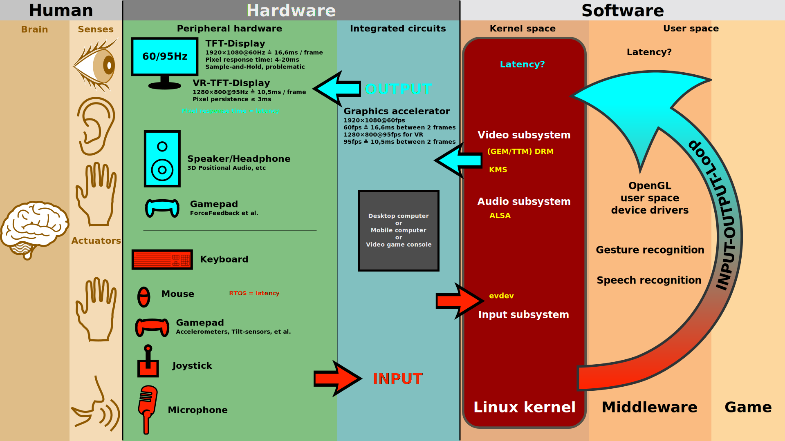
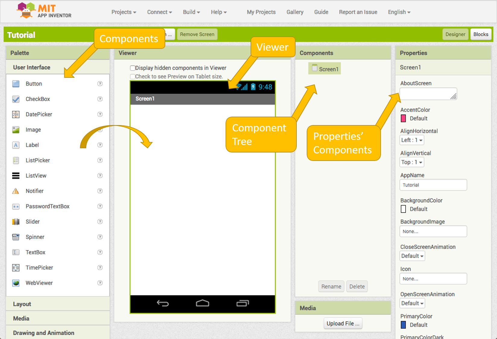
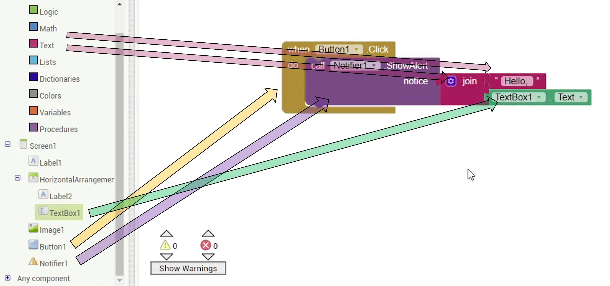

Tutorial 6: Calculadora

Objetivo:
El objetivo de este tutorial es construir una interfaz sencilla para el diseño de una lógica que permita construir una calculadora.
Conceptos Básicos:
Bloque Matemáticas/Math
- Son los bloques que nos permiten diseñar las operaciones sobre números dentro de AppInventor.

Pasos a Seguir
1. Acceso al Entorno
-
Abrir el entorno de desarrollo App Inventor.
- Accede a la siguiente dirección: https://appinventor.mit.edu/
- Pulsa el botón create app!
- Selecciona una cuenta de Google
- Acepta los términos y condiciones (solo la primera vez que se accede a la plataforma)
↧
2. Creación de un proyecto nuevo
- Pulsa el botón “Start new proyect” y pon de nombre al proyecto "Tutorial Bienvenida" Una vez creado el proyecto tenemos la posibilida de acceder a las dos pestañas principales "Designer" y "Blocks" desde la parte superior derecha. Por ahora nos centraremos en la pestaña "Designer" la cual nos permite diseñar la interfaz visual de la aplicación arrastrando los componetes de la barra de la izquierda ("Palette") al "Viewer". Las dos sigiuentes pestañas nos permiten ver la jerarquía de componentes y modificar las propiedades de un componente seleccionado.

↧
3. Creación de un componente etiqueta (label)
- Arrastra el componente Label del margen derecho (Palette->User Interface) al visor. Cambia las
siguientes propiedades del componente:
- FontBold: “marcado” (hará que el texto esté en negrita)
- FontSize: 28 (hará que el texto sea más grande)
- Width: “Fill parent” (hará que ocupe todo el ancho de la pantalla)
- Text: “Welcome to UC3M!” (cambiará el texto que se muestra)
- TextAligment: “Center: 1” (hará que el texto esté centrado)
↧
4. Creación del componente de alineación horizontal
- Arrastra el componente HorizontalArrangement del margen derecho (Palette-> Layout) debajo de la
etiqueta anterior. Este componente permite colocar los elementos horizontalmente. Cambia las
siguientes propiedades del componente:
- Align Vertial: “Center: 2” (hará que el contenido esté alineado verticalmente en el centro)
- Align Horizontal: “Center: 3” (hará que el contenido esté alineado horizontalmente en centro)
- Width: “Fill parent” (hará que ocupe todo el ancho de la pantalla)
↧
5. Creación de una etiqueta (label) y un campo de texto (Textbox)
- Arrastra el componente Label y TextBox (Palette->User Interface) dentro del componente anterior.
Cambia
las siguientes propiedades de los componentes:
- Label.Text: “Name:” (cambiará el texto que se muestra)
- Textbox.Hint: “Ciudad” (cambiará el texto de placeholder)
↧
6. Creación de un componente imagen
- Arrastra el componente Image (Palette-> User Interface) debajo del contenedor horizontal. Cambia
las siguientes propiedades del componente (al final del paso se proporciona una animación de ayuda):
- Width: “Fill parent” (hará que ocupe todo el ancho de la pantalla)
- Picture->Upload File->Examinar… y selecciona la siguiente imagen tras descargarla: (cambiará la imagen a mostrar)

↧
7. Creación de un botón
- Arrastra el componente Button (Palette-> User Interface) debajo de la imagen anterior.
- Width: “Fill parent” (hará que ocupe todo el ancho de la pantalla)
- Text: “Greetings:” (cambiará el texto del botón)
↧
8. Creación del componente de notificaiones (es un componente no visual)
- Arrastra el componente Notifier (Palette-> User Interface) en el visor. Este componente aparece incluido en componente no visuales.
↧
9. Cambiar al modo desarrollo de lógica por bloques
- Cambia a la pestaña Blocks (Arriba a la derecha): Desde esta pestaña se puede diseñar una lógica de aplicación por bloques. Los diferentes bloques están ordenados por categorías y para usarlos tan solo hay que arrastrarlos desde el menú al lienzo.


↧
10. Implementación de la lógica de aplicación
- Construye el siguiente estructura arrastrando los bloques:
- El bloque de marrón indique que cuando se haga “Click” sobre el botón se hará lo que hay dentro.
- El bloque morado hace que se muestre una alerta con el texto que se conecta.
- El bloque magenta concatena dos o más bloques de texto
- El bloque magenta pequeño de arriba contiene el valor: "Hello, "
- El bloque verde representa el valor de texto que contiene el campo de texto (Textbox)

↧
11. Compilación de la aplicación e instalación en el dispositivo
- Pulse el botón de Construir "Build" y seleccione proporcionar código QR para la aplicación QR
- Lea el código QR con su dispositivo Android y descargue la aplicación
- Si es la primera vez que instala una aplicación desde App Inventor es necesario permitir
al dispositivo móvil instalar aplicaciones de origen desconocido (es decir, aplicaciones fuera del
Google Play Store). Para ello:
- Si durante el primer intento de instalación le proporcione un acceso directo a Ajustes-> Seguridad seleccione instalar aplicaciones de origen desconocido
- Si tan solo le deniega la posibilida de instalar. Siga los siguientes pasos:
- Vaya a Ajustes de su dispositivo Android (Settings)
- Acceda a la opción de Seguridad
- Marque el checkbox de permitir instalaciones de origen desconocido
- Tras tener acceso a instalaciones de origen desconocido, intente instalar la aplicación de nuevo.
↧
Extra I - Depuración de la aplicación mientras se desarrolla
- Esta opción de depuración nos permite ir probando la aplicación en el dipositivo móvil mientras se
está diseñando la interfaz o definiendo la lógica con el objetivo de arreglar errores:
- Instale la aplicación Android: MIT AI2 Companion
- Pulse el botón Conectar ("Connect") de la parte superior y seleccione "AI Companion".
- Escanee el código QR o escriba el código en la aplicación de Android
- Pruebe a modificar alguna parte de la aplicación y vea los cambios. Por ejemplo, el texto de la etiqueta "Welcome to UC3M!" por "Welcome to IES Leganés!"
↧
Extra II - Solucionar problema de que el botón de saludar no aparece en pantallas pequeñas
- Al ejecutar la aplicación en un móvil en posición horizontal o en una pantalla pequeña no se puede
ver correctamente el botón de saludar. Para este problema se puede plantear dos opciones:
- Forzar a que la aplicación solo se pueda ver en posición vertical "Portrait" en las opciones de la pantalla Screen. Sin embargo, esta opción no resuelve el problema si el dispositivo tiene una pantalla pequeña.
- Agregar un componete de alineación vertical con la posibilidad de hacer scroll e introducir todos los elementos de la Screen en este.